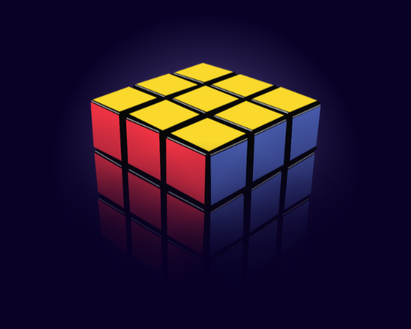
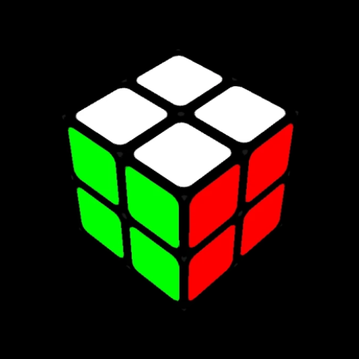
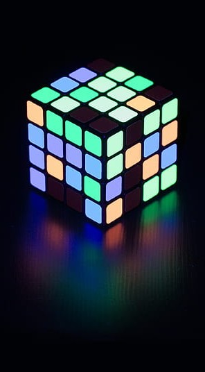
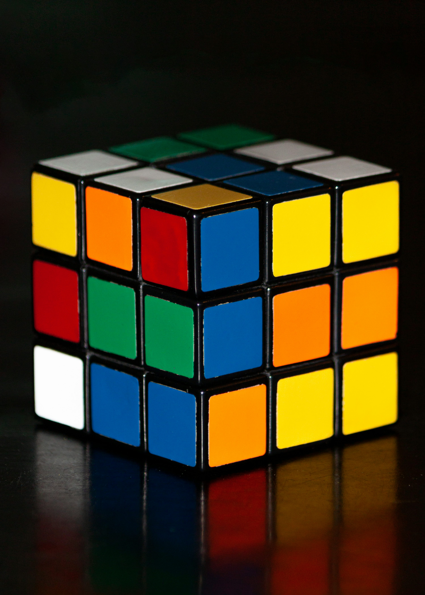

Rubik
Conheça a origem
Cubo de Rubik
Em um mundo onde a lógica e a criatividade se entrelaçam, surge o Cubo de Rubik, um enigma tridimensional que transcende a mera brincadeira. Criado pelas mãos do engenheiro húngaro Ernő Rubik, este objeto mágico desafia os limites da nossa percepção, convidando-nos a desvendar seus segredos ocultos.
O Cubo de Rubik, com suas cores vibrantes e movimentos intrincados, é muito mais do que um simples quebra-cabeça. Ele simboliza os contrastes da condição humana: simplicidade e complexidade; estabilidade e dinâmica, ordem e caos. É uma porta de entrada para um universo de possibilidades, onde a mente se aventura em busca de soluções e a persistência é recompensada com a satisfação da conquista. Cada giro, cada movimento, é uma dança hipnotizante que nos leva a explorar os confins da nossa capacidade de raciocínio.

Prepare-se para embarcar em uma jornada fascinante, onde a lógica e a intuição se unem.
Ideal para Iniciantes
Desafie seus limites!
Clássico e Desafiador!
Compre agora
Desafie sua mente, expanda sua coleção e junte-se à comunidade do Cubo de Rubik, onde a conquista e a paixão se unem.
3 por 3
R$21,84- Desafio constante
- Melhora a concentração
- Treina a coordenação motora
- Comunidade global
- Diversão garantida
4 por 4
R$59,89- Nível avançado
- Exige raciocínio espacial
- Desenvolve paciência e persistência
- Melhora a solução de problemas
- Sensação de superação pessoal
- Efeito neon
- Cubo exclusivo para coolecionadores
Desafio de Velocidade
Coloque suas habilidades à prova e cronometre o tempo que você leva para resolver o Cubo de Rubik. Busque constantemente superar seus próprios recordes, aprimorando suas técnicas de speedcubing para otimizar cada movimento. Convide amigos para competir e transforme a resolução do cubo em uma emocionante disputa de velocidade.
Desafio de Padrões
Explore o lado artístico do Cubo de Rubik e aprenda a criar padrões específicos em suas faces. Desenvolva sua criatividade ao formar desenhos e figuras geométricas, transformando o cubo em uma tela tridimensional. Compartilhe suas criações únicas com a comunidade online, inspirando outros entusiastas a explorarem novas possibilidades.
Desafio da Resolução às Cegas
Eleve seu domínio do Cubo de Rubik a um novo patamar, desafiando-se a resolvê-lo de olhos vendados. Desenvolva sua memória espacial e habilidades de visualização, memorizando a posição de cada peça antes de iniciar a resolução. Essa prova de concentração e controle mental testará seus limites e o levará a um nível de excelência no mundo do cubismo.